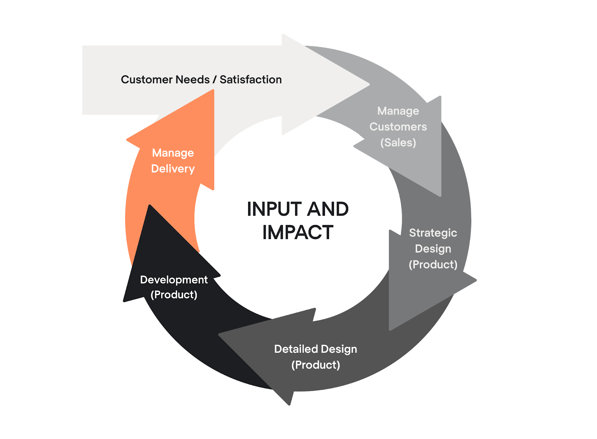

Kasutajakogemuse ja funktsionaalsuse eelistamine on ümber kujundanud, kuidas me suhtume tarkvaraloomele, mis viib disainipõhise arengu (DDD) tõusuni.
See lähenemisviis ei puuduta esteetikat, mis puudutab mõistmist, empaatiat ja lahenduste pakkumise, mis resoneerivad lõppkasutajatele.
Disaini-Driveni arengu mõistmine nõuab sukeldumist oma samm-sammulisse protseduuri. Iga etapp aitab tagada, et kasutaja püsiks arengutsükli keskmes. Siin on, kuidas see kulgeb:
- 1. Kasutajauuringud - kasutaja mõistmine läbi uuringute, intervjuude, kasutaja personas, kasutaja suhtluse kaardistamine
- 2. Nõue - itsendab uurimisetapi käigus kogutud laiapõhjalisi teadmisi, sorteerib ning eelistab järgmiste sammude juhendamist ja projekteerimisotsuseid.
- 3. Disaini ja ideeetapp - Otsustatakse navigeerimise ja disaini kohaselt, kus mõledakse läbi elemente nagu nupud, menüüd, värvi ja kirju.
- 4. Prototyping ja kasutajate testimine disain - UXPinzhs Merge tehnoloogia võimaldab disaineritel importida React komponente disainitoimetajasse, et ehitada interaktiivseid prototüüpe, mis näevad välja ja tunnevad end lõpptootena. Kasutajate tagasiside kaasates kasutajaid disainiga suhtlema.
- 5. Disaini käegalülitamine ja arendamine - Tõhus kommunikatsioon tagab, et arendajad mõistavad disainitahte, ühise projekteerimissüsteemi loomine
- 6. Iteratiivne tagasisisde - Kasutaja Acceptance Testing(UAT) suhtlevad tootega reaalses maailmas kasutajad.
- 7. Käivitage ja Iterate - Tooterühmad peavad hindama disaini mõju lõpptootele ja reaalse maailma kogemusele.

Näide tööriistast: Figma